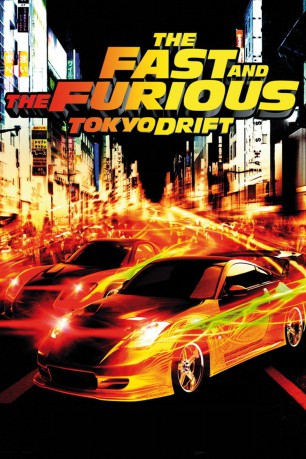
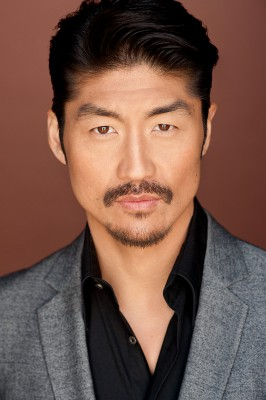

#239 Fast and Furious 3 - Tokyo Drift
 
 IMDB-Wertung: 6.0 / 10
IMDB-Wertung: 6.0 / 10  Metascore: 45
Metascore: 45 
Sean liebt illegale Straßenrennen, welche ihm aber schon des Öfteren große Schwierigkeiten bereiteten und er durch sie nun kurz vor dem Jugendknast steht. Die letzte Alternative ist sein Vater in Tokio, bei dem er unterkommt und bei dem er sich keine Fehltritte erlauben darf. Doch schon nach kurzer Zeit lernt er Twinkie kennen, der ihn in die Rennszene Tokios einführt. Allerdings stellt Sean beim ersten Rennen in einem Parkhaus fest, dass hier anders gefahren wird: Driften steht an der Tagesordnung - ein Fahrstil, von dem er vorher nie gehört hat. Als er dort seine Mitschülerin Neela anspricht und ihr Freund D.K. daraufhin die Fronten klärt, fordert Sean ihn zu einem Rennen heraus. Nur mit D.K.s Partner Han kann Sean überhaupt in einem Auto an die Startlinie fahren, welches während des Rennens allerdings einen Totalschaden erleidet. Für eine Revanche muss er erstmal das Driften lernen...
Jahr: 2006
Dauer: 104 Minuten
FSK: 12
Land: USA Studio: Universal PicturesTonspuren: DTS - ,
Untertitel: Deutsch,
Auflösung: 1080p (1920x816) Größe: 6451 MB
Genre: Action, Krimi, Thriller
Regisseur: Justin Lin
Drehbuch: Chris Morgan
Soundtrack: Brian Tyler
Darsteller:
 Lucas Black als Sean Boswell
Lucas Black als Sean Boswell- Zachery Ty Bryan als Clay
- Brandon Brendel als Clay's Buddy #1
 Daniel Booko als Clay's Buddy #2
Daniel Booko als Clay's Buddy #2- David V. Thomas als Clay's Buddy #3
- Amber Stevens West als Cheerleader #1
- Nikki Griffin als Cindy - Clay's Girlfriend
 Vincent Laresca als Case Worker
Vincent Laresca als Case Worker Lynda Boyd als Ms. Boswell
Lynda Boyd als Ms. Boswell Brian Goodman als Major Boswell
Brian Goodman als Major Boswell- Nathalie Kelley als Neela
- Shad Moss als Twinkie
 Leonardo Nam als Morimoto
Leonardo Nam als Morimoto- Jason Tobin als Earl
- Keiko Kitagawa als Reiko
-  Brian Tee als D.K.
 Sung Kang als Han
Sung Kang als Han- Kaila Yu als Cowgirl at Starting Line #1
- Satoshi Tsumabuki als Exceedingly Handsome Guy
- Alden Ray als Alden
- Caroline de Souza Correa als Sexy Brazilian Model
- Silvia Suvadová als Russian Model
- Koji Kataoka als Yakuza Pinkie
 Shin'ichi Chiba als Uncle Kamata
Shin'ichi Chiba als Uncle Kamata- Stuart W. Yee als Yakuza Man #2
- Mitsuki Koga als Yakuza Man #3
- April Betts als Cheerleader , uncredited
- Willis Chung als Tea Hair #5 , uncredited
 Vin Diesel als Dominic Toretto , uncredited
Vin Diesel als Dominic Toretto , uncredited- Victoria Gracie als Model , uncredited
- Alexis Hernandez als Latino Crew , uncredited
- Harley Jay als Student , uncredited
- Paul Leach als Hero Man , uncredited
- Sandra McCurdy als Model , uncredited
- Masami Okada als Hostess at scene with Sunny Chiba , uncredited
- Kevin Ryan als Bully , uncredited
- Sandy Yu als Hip Hop Girl , uncredited
- Damien Marzette als High School Security Guard
- Trula M. Marcus als American Math Teacher
- Ashika Gogna als Cheerleader #2
- Christian Salazar als Chubby Hispanic Kid
- Kevin Caira als Auto Shop Bully #1
- Trey Sanford als Auto Shop Bully #2
- Danny Ray McDonald II als Auto Shop Bully #3
- Joey Crumpton als Police Officer
- Yôko Maki als Woman at Boswell's Apartment
- Rie Shibata als Math Teacher
- Toshi Hayama als Toshi at Underground Garage
- Atley Siauw als DJ Atley
- Kazuki Namioka als Tea Hair #1
Datei: X:\7+mehr(A-Z)\Fast and Furious\Fast and Furious 3 - Tokyo Drift (2006, FSK12, 1920x816).mkv seit 15.02.2015
Festplatte: HD Collection-7+mehr(A-Z)+Person
 Es gibt insgesamt 13 Filme in der Gruppe '7+mehr(A-Z)\Fast and Furious'
Es gibt insgesamt 13 Filme in der Gruppe '7+mehr(A-Z)\Fast and Furious'